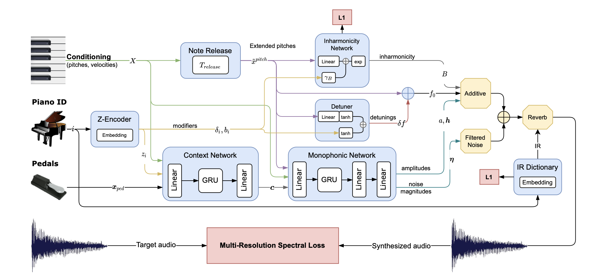

The current webpage offers multiply audio examples from the TI-Project "Analysis of Differntiable Piano Model".
The aim was to figure out what are physically informed neural based synthesizer are caplable of. Thus, we tried to analyze the underlaying piano synthesizer[1]
which is also available on Github ddsp-piano .

[1] L. Renault, R. Mignot, and A. Roebel, “Differentiable Piano Model for
MIDI-to-Audio Performance Synthesis,” Sep. 2022, publisher: Differentiable Piano Model
z-Vector - Different piano models
The first section gives an impression of the 10 different pianos which are available with a simple c major chord.
piano 1
piano 2
piano 3
piano 4
piano 5
piano 6
piano 7
piano 8
piano 9
piano 10
Noisy MEL Coefficients
HiFiGAN
BigVGAN tiny
BigVGAN base
clean
5
10
15
20
25
35
45
Deep Filter Net applied to white guassian noise speech samples, with 20dB SNR, and synthesized with different vocoders
Clean
Noisy
DFN
HiFiGAN
BigVGAN tiny
BigVGAN base
p237
p247
p283
p335
Deep Filter Net applied to noisy and reverberent speech samples and synthesized ERB gain enhanced spectrogram with different vocoders
Clean
Noisy
DFN
HiFiGAN
BigVGAN tiny
BigVGAN base
p237
p247
p283
p335
Deep Filter Net applied to noisy and reverberent speech samples synthesized ERB gain enhanced and complexed filtered spectrogram with different vocoders
Clean
Noisy
DFN
HiFiGAN
BigVGAN tiny
BigVGAN base
p237
p247
p283
p335
Created by Simon Windtner, IEM, 2024. For questions please contact windtner@iem.at